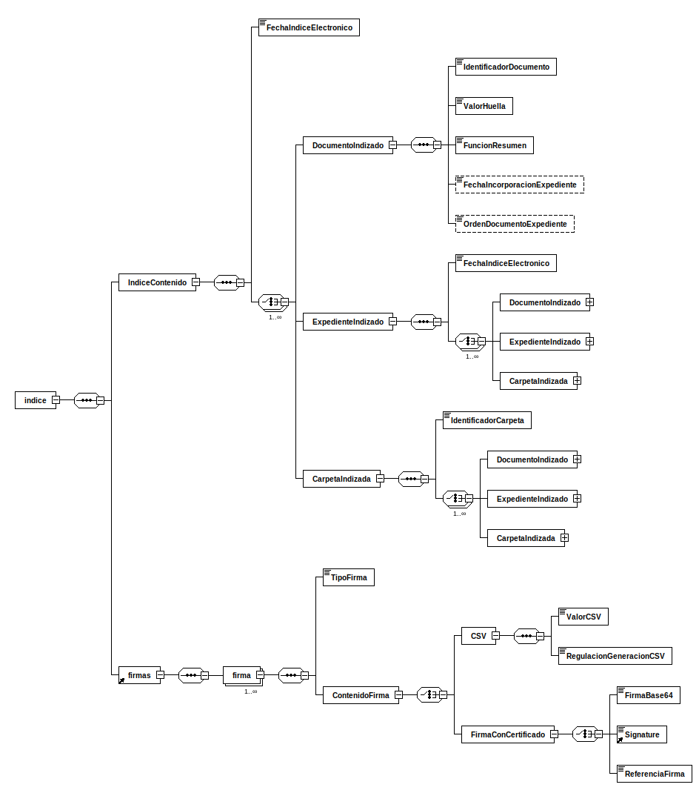

xsddiagram -no-gui -y -r indice -e 5 -o indice.csv http://administracionelectronica.gob.es/ENI/XSD/v1.0/expediente-e/indice-e/IndiceExpedienteEni.xsd
xsddiagram -no-gui -y -r indice -e 5 -o indice.txt http://administracionelectronica.gob.es/ENI/XSD/v1.0/expediente-e/indice-e/IndiceExpedienteEni.xsd
xsddiagram -no-gui -y -r indice -e 5 -o indice.png http://administracionelectronica.gob.es/ENI/XSD/v1.0/expediente-e/indice-e/IndiceExpedienteEni.xsd
xsddiagram -no-gui -y -r indice -e 5 -o indice.svg http://administracionelectronica.gob.es/ENI/XSD/v1.0/expediente-e/indice-e/IndiceExpedienteEni.xsd{kind=link}
{kind=link}

curl -L http://administracionelectronica.gob.es/ENI/XSD/v1.0/expediente-e/indice-e/IndiceExpedienteEni.xsd
<?xml version="1.0" encoding="UTF-8"?>
<xsd:schema
xmlns:xsd="http://www.w3.org/2001/XMLSchema"
xmlns:enids="http://administracionelectronica.gob.es/ENI/XSD/v1.0/firma"
xmlns:eniexpind="http://administracionelectronica.gob.es/ENI/XSD/v1.0/expediente-e/indice-e"
xmlns:eniconexpind="http://administracionelectronica.gob.es/ENI/XSD/v1.0/expediente-e/indice-e/contenido"
targetNamespace="http://administracionelectronica.gob.es/ENI/XSD/v1.0/expediente-e/indice-e"
elementFormDefault="qualified" attributeFormDefault="unqualified">
<xsd:annotation>
<xsd:documentation xml:lang="es">XSD INDICE EXPEDIENTE ELECTRONICO ENI (v1.0)</xsd:documentation>
</xsd:annotation>
<xsd:import namespace="http://administracionelectronica.gob.es/ENI/XSD/v1.0/firma" schemaLocation="http://administracionelectronica.gob.es/ENI/XSD/v1.0/firma/firmasEni.xsd"/>
<xsd:import namespace="http://administracionelectronica.gob.es/ENI/XSD/v1.0/expediente-e/indice-e/contenido" schemaLocation="http://administracionelectronica.gob.es/ENI/XSD/v1.0/expediente-e/indice-e/contenido/IndiceContenidoExpedienteEni.xsd"/>
<xsd:element name="indice" type="eniexpind:TipoIndice"/>
<xsd:complexType name="TipoIndice">
<xsd:sequence>
<xsd:element name="IndiceContenido" type="eniconexpind:TipoIndiceContenido"/>
<xsd:element ref="enids:firmas">
<xsd:annotation>
<xsd:documentation>Existirá, al menos, una firma del contenido del índice del expediente electrónico.</xsd:documentation>
</xsd:annotation>
</xsd:element>
</xsd:sequence>
<xsd:attribute name="Id" type="xsd:ID" use="optional"/>
</xsd:complexType>
</xsd:schema>